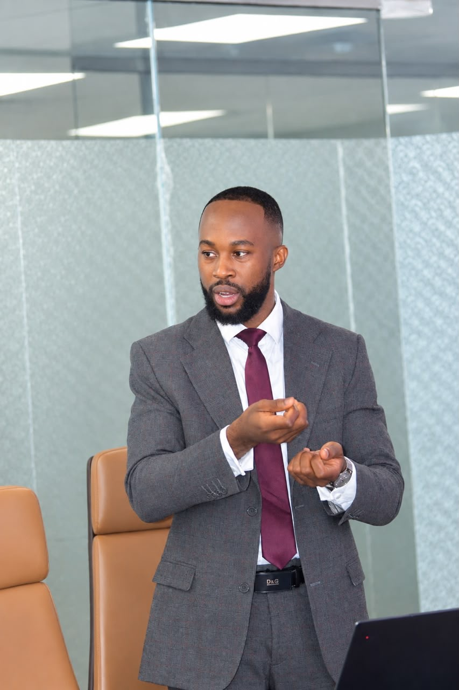

Physique numérique
Recherche doctorale, modélisation et résolution structurée de problèmes.
À PROPOS
Je suis le Dr. Michel MAMA TOULOU, docteur en physique numérique, formateur et consultant en data, intelligence artificielle et cloud computing.

SCIENCE · TECHNOLOGIE · TRANSMISSIONMON PARCOURS
Après ma thèse de doctorat en physique numérique, j’ai choisi de mettre la modélisation, l’analyse et la résolution de problèmes au service des organisations.
J’ai évolué dans le marché de la donnée, de l’intelligence artificielle et du cloud computing. Cette expérience m’a amené à intervenir sur l’ensemble de la chaîne de valeur : de la collecte et l’ingénierie de la donnée jusqu’à l’exploitation et la valorisation.
Je conçois et pilote des projets de bout en bout : comprendre les enjeux, définir les cas d’usage avec les équipes, choisir une architecture adaptée, construire la solution, puis accompagner son déploiement et son passage à l’échelle.
Mon terrain couvre les environnements on-premises, hybrides et cloud, notamment Azure, AWS et GCP. J’intègre dès la conception les sujets de gouvernance des données et de l’IA, de sécurité, d’observabilité et de maintien en conditions opérationnelles. Les indicateurs, les traces et les alertes aident à comprendre les systèmes, repérer les incidents et améliorer leur fiabilité.
MON DOCTORAT · UNIVERSITÉ PARIS-SACLAY / CEA
J’ai mené ma thèse au CEA, entre deux laboratoires complémentaires : le SPEC (Service de Physique de l’État Condensé), au sein de l’équipe SPHYNX — Systèmes Physiques Hors-équilibre, hYdrodynamique, éNergie et compleXité, rattachée à la Direction de la recherche fondamentale (DRF), et le L2MT (Laboratoire de modélisation de la thermodynamique et thermochimie), à la Direction des énergies, anciennement Direction de l’énergie nucléaire.
Ma thèse, soutenue en 2023, portait sur l’étude des verres borosilicatés de sodium (SiO₂–B₂O₃–Na₂O) par simulations de dynamique moléculaire.
En explorant une large gamme de compositions, j’ai étudié leurs propriétés structurelles, thermodynamiques, mécaniques et leur comportement à la rupture. La simulation permet d’examiner plusieurs compositions et propriétés en complément de l’expérience, lorsque le coût, les échantillons ou le temps limitent les essais.
Lire le manuscrit de thèseUN PARCOURS EN MOUVEMENT
Une progression par domaines, sans dates ni jalons inventés.
Recherche doctorale, modélisation et résolution structurée de problèmes.
Concevoir les chaînes de données, de la collecte à la valorisation.
Relier plateformes, automatisation, gouvernance et exploitation.
Intégrer machine learning et IA générative à des usages concrets.
Développer des approches autour de la sécurité, des agents et du contrôle.
Accompagner les organisations et transmettre les compétences.
Des fondations, architectures et solutions pensées pour leur contexte d’usage.
Des concepts accessibles, des pratiques applicables et plus d’autonomie.
Les problèmes complexes qui demandent rigueur, coopération et mise en œuvre.
MA FAÇON DE TRAVAILLER
Clarifier la difficulté et les objectifs avant de recommander une technologie.
Progresser sur des cas réels, en rendant les choix et les méthodes compréhensibles.
Vous aider à gagner en autonomie, que vous soyez une personne ou une équipe.
ET MAINTENANT ?